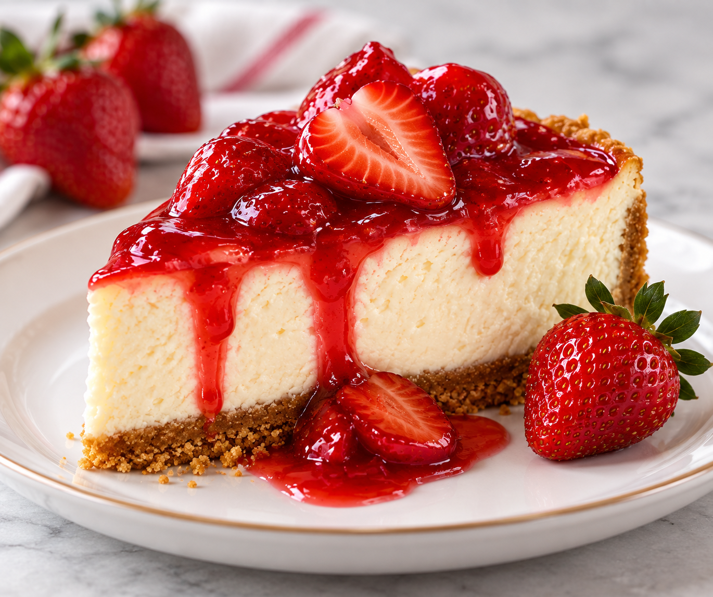

Strawberry Cheesecake Delight
Indulge in our creamy Strawberry Cheesecake, made with a rich, smooth cheesecake filling on a buttery graham cracker crust. Topped with fresh strawberries and a sweet strawberry glaze, every bite is the perfect balance of creamy, fruity, and delicious.
Ingredients
- 2 cups graham cracker crumbs
- ½ cup unsalted butter, melted
- ¼ cup granulated sugar
- 24 oz cream cheese, softened
- 1 cup granulated sugar
- 3 large eggs
- 1 teaspoon vanilla extract
- ½ cup sour cream
- 2 cups fresh strawberries, sliced
- ½ cup strawberry preserves or glaze
- 1 tablespoon lemon juice
Instructions
The Essentials
- Prepare the Crust, Preheat the oven to 350 °F (175°C). Combine the graham cracker crumbs, melted butter, and sugar in a bowl. Mix well until the crumbs are evenly coated. Press the mixture firmly and evenly into the bottom of a 9-inch springform pan. Bake until the crust is lightly golden, then remove it from the oven and allow it to cool slightly.
- Make the Filling - Beat the softened cream cheese and sugar together until smooth and creamy. Add the eggs one at a time, mixing gently after each addition. Add the vanilla extract and sour cream, then mix until everything is well combined. Pour the filling evenly over the prepared crust.
- Bake until Cool - Bake the cheesecake at 325°F (165°C) for 55–65 minutes. The edges should look set while the center should still have a slight jiggle. Turn off the oven, slightly open the oven door, and leave the cheesecake inside for approximately 1 hour. Remove it and allow it to finish cooling to room temperature.
- Add the Strawberries - Combine the sliced fresh strawberries, strawberry preserves or glaze, and lemon juice. Gently mix until the strawberries are evenly coated. Spoon the strawberry mixture over the top of the chilled cheesecake.
- Serve and Enjoy - Slice, serve chilled, and enjoy!